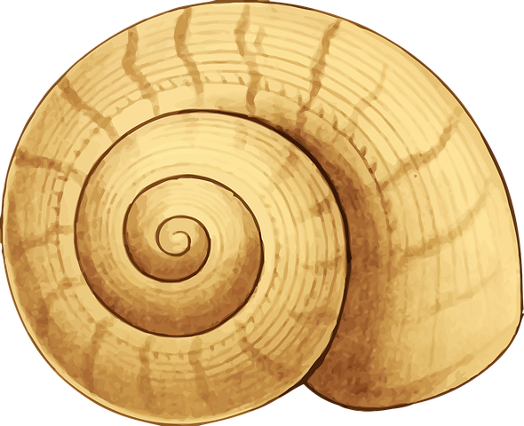
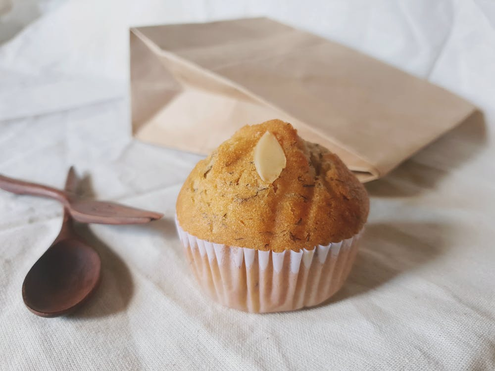

Cette semaine nous allons partir à la découverte d’un nouveau pays, l’Indonésie. Après avoir lu le livre Eat Pray and Love écrit par Elizabeth Gilbert, j’ai voulu découvrir l’Indonésie et plus particulièrement Bali. J’ai décidé de faire le même parcours qu’elle partant de l’Italie, passant par l’Inde et terminant par Bali. C’est pourquoi aujourd’hui nous allons nous concentrer sur l’Asie du Sud-Est.
Si vous voulez que je vous parle de mon expérience n’hésitez pas à me le dire, vous pouvez me contacter par mail ou sur les réseaux sociaux.


L’Indonésie est un pays de l’Asie du Sud-Est composé de milliers d’îles. Connu pour ses plages paradisiaques, les volcans tous plus impressionnants les uns que les autres, les jungles habitées par des centaines de milliers d’espèces différentes mais aussi grâce à ses nombreux temples comme celui d’Uluwatu. Bali est aussi très connu pour ses retraites spirituelles avec des pratiques de méditation et de yoga.
Maintenant je vous laisse découvrir quelques photos des plus belles plages, un article en lien avec l’Indonésie, des vidéos pour des destinations similaires et une petite liste avec des guides de voyages si vous partez.
Alors bonne lecture et n’oubliez pas de participer à la fin de la page !

 Localiser l'Indonésie
Localiser l'Indonésie

 Quelques images en mouvement
Quelques images en mouvement